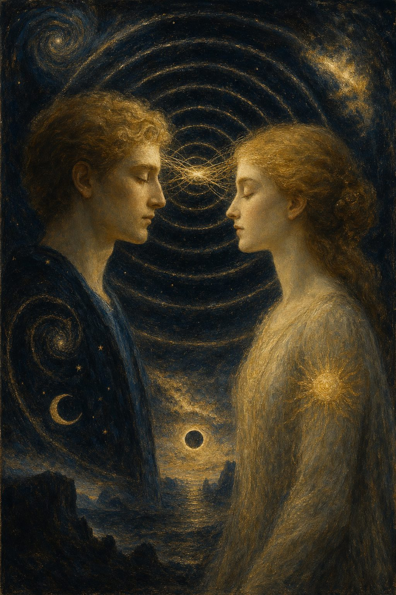

Communication between primal feelings
High-frequency gravity and the frontal bone
Hypothesis · 14 min read

By Jacobus van Merksteijn
It is three in the morning. A mother is asleep in The Hague. Her daughter is travelling in New Zealand — thirteen hours' time difference, on the other side of the world. The mother wakes up. Not from a sound, not from a nightmare. She wakes up knowing something is wrong. She can't describe it. She sits on the edge of her bed and waits. Two hours later, the phone rings.
This story exists in hundreds of variations, across every continent, in every historical period, in every demographic group. Mothers and children. Husbands and wives. Twins who know what is happening to the other without any verbal contact. Friends who feel each other's phone before it rings. A stranger's gaze on the back of your neck, so you turn around — and catch their eyes.
Mainstream science has long dismissed these reports as selective memory. You remember the time you woke up and something was wrong. You forget the ten thousand times you woke up and nothing was the matter. Selection bias, confirmation effect, the human tendency to see patterns in randomness.
That is a legitimate scientific caution. But the persistence of the phenomenon, in every culture, in every historical period, is greater than selection bias alone can sustain. At a certain point, the explanation via dismissal of the facts becomes less credible than a serious attempt to understand them.
This is the most speculative article in this edition. I know that. I write it anyway, because the question it raises is too important to leave lying.
The order of falling asleep
There is an observation every person can make at the moment they fall asleep, and which says more than it first appears.
The senses do not shut down simultaneously when falling asleep. They go offline in a sequence. And that sequence is informative.
The first to go quiet is the awareness of the body itself — proprioception, the continuous stream of information about posture, muscle tension, position in space. These are the slowest signals. When falling asleep, they are the first to disappear.
Next, the processing of smell diminishes. Smell works on molecules that physically reach the nose. It is connected to older brain structures — the olfactory bulb sits close to the limbic system. In falling asleep, smell goes quiet earlier than the higher senses.
Only after that does hearing diminish. Hearing works on sound waves — frequencies between 20 and 20,000 hertz. It remains active longer than the lower senses, because evolutionarily it was necessary to be able to respond to approaching danger during sleep.
It remains active longer than the lower senses, because evolutionarily it was necessary to be able to respond to approaching danger during sleep.
The last to shut down is vision. The eyes are already closed before the other senses go quiet — but the visual cortex remains active, especially during REM sleep, when dream images form. Vision works on frequencies enormously higher than hearing: electromagnetic radiation in the visible spectrum, somewhere between 430 and 770 terahertz.
What is striking about this sequence: it corresponds to a frequency ladder. From slow — the body signals, the low frequencies of proprioception — to high: the visible radiation of the eye. The senses shut down ranked by their characteristic frequency range. The slowest go first. The fastest last.
But here is the question: what if the ladder extends beyond vision? What if there is a sense that operates on frequencies higher than visible radiation, and which is the last to be switched off when falling asleep — or perhaps is not switched off at all? That comes into its full operation precisely then, when all other channels are closed?
What every culture knows but science has not measured
This would be the sense through which people across all time have reported making contact with others at a distance. Not via the eyes, not via the ears, not via the skin — via something they could not name but could feel directly. Something that worked without language, without gesture, without the ordinary sensory channels.
The folk healer who works at a distance. The mother who knows what is happening to her child. The twins who feel each other's pain. The gaze on the back of the neck. All of these phenomena describe the same thing: a direct connection between two primal feelings, without the mediation of the regular senses.
I make no claims here about paranormal phenomena. I am asking a methodological question: what if these observations refer to a physically real mechanism that current instruments do not pick up? What if there is a physical carrier for this type of communication that falls within the laws of normal physics but outside the reach of our current detection methods?
That is a scientific question. It is uncomfortable enough to take seriously.
The gravitational radiation hypothesis
The most fundamental form of communication that physics knows is gravitational radiation. Unlike electromagnetic radiation — which is attenuated by matter, blocked by walls, absorbed by atmosphere — gravitational radiation passes through everything. Lead does not stop it. Kilometres of rock do not. The skull of a human being does not. It couples so weakly to ordinary matter that nothing stands in its way.
The detectors of the LIGO experiment, which in 2015 first directly detected gravitational waves, measure frequencies between 30 and 250 hertz — originating from the merging of black holes billions of light-years away. Impressive, but also fundamentally different from what is relevant here.
The conventional assumption is that gravitational radiation always occurs at low frequencies and always originates from massive astrophysical sources. But that is a methodological bias, not a law of nature. General relativity does not forbid high frequencies. It only forbids specific energy-frequency combinations that are physically impossible. High-frequency gravitational radiation from smaller sources is in principle permitted within existing theoretical frameworks.
Here is the hypothesis: the living brain — and in particular the synchronised activity of certain neural networks — could be a source of weak, high-frequency gravitational radiation. Not at LIGO frequencies, but at much higher frequencies corresponding to the speed of neural oscillations and molecular movements in brain cells.
Neural activity ranges from delta waves (0.5 to 4 hertz, deep sleep) to gamma oscillations (30 to 200 hertz, active concentration) and, in some measurements, to rhythms in the megahertz range at the microtubule level. If there were a connection between synchronised neural resonance and gravitational radiation, that radiation would sit at those higher frequencies — far outside the range of existing detectors.
Three characteristics could make the hypothesis plausible.
First: short range. Astrophysical gravitational waves remain detectable over billions of light-years because they originate from enormous mass-energies. A brain field would be an incomparably smaller source, and the radiation would weaken rapidly with distance. But that is not a shortcoming — it actually explains why the effect has only been observed nearby. People in the same room feel it. People at kilometres' distance do not.
Second: direction via the prefrontal cortex. The prefrontal cortex has the highest neuron density and the most synchronised gamma rhythms during focused attention. If a coherent collective oscillation were to occur that could function as a source of gravitational radiation, the prefrontal cortex is a more plausible candidate than other brain regions. The observation that focused attention seems to work via the forehead connects to this.
Third: the skull-thickness observation. People with a thinner frontal bone are described in historical sources and modern reports as more receptive to this type of communication. For electromagnetic fields this makes mechanical sense: a thicker bone layer attenuates the signal. For gravitational radiation in the classical sense it does not — gravity is not attenuated by bone. But if what we are dealing with here is a hybrid effect, something working at the boundary of gravity and electromagnetism, or involving subtle quantum coupling effects in microtubules of neuronal structures, then skull thickness could play a modulating role.
This is speculation. I say it again and I mean it: this is speculation. But it is speculation that fits within existing theoretical frameworks and generates direct empirical predictions that are testable.
Why science has not measured this
There are three structural reasons why current science has not been able to measure this phenomenon, and none of them is a principled impossibility.
The first is that no detector for it exists. LIGO and its successors were designed for the low-frequency range. Theoretical proposals for high-frequency gravitational radiation detectors do exist — levitated sensors, quantum-limited interferometers — but they have not been operationally developed because no astrophysical source in that range was predicted. Detection was made methodologically impossible before it could ever take place.
The second reason is the assumption about weak coupling. Standard calculations show that gravity couples extremely weakly to matter at low frequencies and large scales. But the coupling ratio at high frequencies and small distances does not necessarily have to be the same. Theoretical proposals around Planck-scale effects suggest that the relationship between gravity and quantum physics at small distances is more complex than macroscopic relativity implies. The assumption that the weakness of coupling we measure at large scales also applies at small scales is a working hypothesis, not an established fact.
The third reason is funding. The idea that a living brain could be a source of detectable gravitational radiation sits so far outside the prevailing paradigm that it receives no grant funding. The researcher who wanted to test whether this phenomenon exists would get no budget, no position, no publication venue. This creates the illusion that nothing is there, while in fact no one has looked.
This pattern is not new. Wegener, who proposed continental drift, was dismissed — for a decade. Barbara McClintock, who showed that genes can jump in the genome, waited twenty years for recognition. Mendel, who described the laws of heredity, was ignored his entire life. An idea that lies too far outside existing thinking is not refuted; it is left unaddressed. Until the moment when it can no longer be left unaddressed.
What this means for the primal feeling
If the hypothesis has any basis — if primal feelings do indeed communicate directly with each other, outside the ordinary sensory channels — then that has far-reaching consequences for everything written in this edition.
The primal feeling is then not only the compass with which a person reads reality. It is also the organ through which one is in contact with other primal feelings. The banishing of the primal feeling from modern society then means not only that individual people lose their contact with direct reality. It means that people, at the deepest level, lose contact with each other.
The loneliness of the modern human being is then not only social and psychological — it is also topological. People are cut off from a field that may exist, but which they can no longer reach because the instrument through which you access it — the primal feeling — has been systematically extinguished.
The loneliness of the modern human being is then not only social and psychological — it is also topological.
And the presence of a teacher, a parent, a mentor with an intact primal feeling then has an effect on children that goes beyond what is said or done. Who he is communicates directly. Not through language. Not through the cortex. Through the field that exists between primal feelings, if that field exists.
The open question
I end with the question, not the answer.
Are there researchers who want to test this seriously? Are there physicists willing to design a detector for the frequency range relevant here? Are there neuroscientists who want to measure whether there are detectable correlations between the brain waves of two people in shielded rooms? Are there biologists who want to investigate whether skull thickness correlates with receptivity under controlled conditions?
The methodological paths are open. The technology exists in principle. What is missing is the willingness to ask the question.
That willingness is precisely what the primal feeling asks: "I don't know, but I feel that something is here." That is not an answer. It is the beginning of the search.
For further reading: the complete theoretical elaboration of the communication hypothesis between primal feelings — including the gravitational radiation hypothesis, the sleep-sequence analysis, and the four research directions — is in the work Denkbasis voor een 7-dimensionaal gevoelsmodel. The practical significance of mentors with an intact primal feeling for children is in the Manifest voor onderwijs en opvoeding. Both works are available for download on openvizier.org.
The practical significance of mentors with an intact primal feeling for children is in the Manifest voor onderwijs en opvoeding.
Do We Communicate More Than We Think?
Three in the morning in The Hague. A mother wakes, knowing something is wrong with her daughter in New Zealand. Two hours later the phone rings.
"This is the most speculative article in this edition. I write it anyway, because the question it raises is too important to leave lying."
The order of falling asleep
The senses don't shut down simultaneously when you fall asleep — they go offline in a sequence. First the body's awareness, then smell, then hearing, and last of all vision. That sequence corresponds to a frequency ladder, from slow to fast: the slowest senses go first, the fastest last.
Here is the question: what if the ladder extends beyond vision? What if there is a sense operating on frequencies higher than visible light, the last to switch off when you sleep — or never switched off at all, coming into its full operation precisely then?
What every culture knows
The folk healer who works at a distance. The mother who knows. The twins who feel each other's pain. The gaze on the back of the neck. All describe the same thing: a direct connection between two primal feelings, without the ordinary sensory channels.
I make no paranormal claims. I ask a methodological question: what if these observations refer to a physically real mechanism that current instruments do not pick up? That is a scientific question. It is uncomfortable enough to take seriously.
The gravitational radiation hypothesis
The most fundamental form of communication physics knows is gravitational radiation. It passes through everything — lead, rock, the human skull. LIGO measured it in 2015, but only at low frequencies from merging black holes. General relativity does not forbid high frequencies, only specific impossible energy combinations.
The hypothesis: the living brain — the synchronised activity of certain neural networks — could be a weak source of high-frequency gravitational radiation, far outside the range of any existing detector. Short range explains why people in the same room feel it and people kilometres away do not.
Why science has not measured this
Three structural reasons, none a principled impossibility: no detector exists for that frequency range; the assumption of weak coupling holds at large scales but not necessarily at small ones; and the idea sits so far outside the paradigm that it receives no funding — creating the illusion that nothing is there, while in fact no one has looked.
The pattern is old. Wegener and continental drift, dismissed for a decade. McClintock and jumping genes, twenty years for recognition. Mendel, ignored his whole life. An idea too far outside existing thinking is not refuted; it is left unaddressed — until it can no longer be.
Close
If primal feelings do communicate directly, the loneliness of modern man is not only social and psychological — it is topological. People cut off from a field they can no longer reach, because the instrument that accesses it has been extinguished. And a teacher or parent with an intact primal feeling then affects children beyond anything said or done. Who he is communicates directly.
"'I don't know, but I feel that something is here.' That is not an answer. It is the beginning of the search."